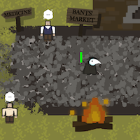
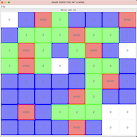
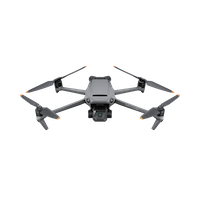

Over the last year of learning computer science,
I have put together a few projects outside of school.
Below are the GitHub links to these projects, along
with a short description of each.
NEW OLYMPUS - By Harivansh Luchmun, Nick Thompson and Brianna Patten
A 2D beat-em-up style game coded in GameMaker Studio.
The player begins as a detective in a retro-futuristic world.
When Nectar becomes a popular street drug, the player
is faced with solving mysteries and saving the day.
This game was coded as a project for Hacklahoma 2024.

Project Idea Generator - By Harivansh Luchmun and Brianna Patten
A program that makes idea generation cute and easy.
This project was coded in python using the OpenAI API.
Its purpose is to provide users with a more simple way to
come up with coding project ideas.
This game was coded as a project for the 2024 Symposium.

Plague City - By Harivansh Luchmun and Brianna Patten
A 2D top-down game coded in Python3 with Pygame.
The player begins the game as a plague doctor in a city
where the Black Plague has infected the townspeople.
As a doctor, the player must fulfill medicinal requests and save the day!

Minesweeper
A full implementation of Minesweeper with MVC architecture.
Allows the player to experience the
nostalgia of the original Minesweeper game,
while having the option to save and reload their progress later on.

Robot Control
A program in Java which allows the user to
connect with a pre-provided robot and control
its movement.

In-Terminal Connect4
A simple terminal-or-IDE-played rendetion of
the classic game, Connect4.